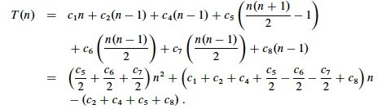
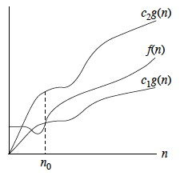
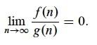
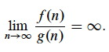

Outline
- Intro to Asymptotic Analysis
- Big-O
- Ω (Omega)
- Θ (Theta)
- Asymptotic Notation in Equations
- Asymptotic Inequality
- Properties of Asymptotic Sets
- Common Functions
Intro to Asymptotic Analysis
The notations discussed today are ways to describe behaviors of functions, particularly in the limit, or asymptotic behavior.
The functions need not necessarily be about algorithms, and indeed asymptotic analysis is used for many other applications.
Asymptotic analysis of algorithms requires:
- Identifying ** what aspect of an algorithm we care about**, such as:
* runtime;
* use of space;
* possibly other attributes such as communication bandwidth;
-
Identifying **a function that characterizes that aspect; ** and
-
Identifying the asymptotic class of functions that this function belongs to, where classes are defined in terms of bounds on growth rate.
The different asymptotic bounds we use are analogous to equality and inequality relations:
- O ≈ ≤
- Ω ≈ ≥
- Θ ≈ =
- o ≈ <
- ω ≈ >
In practice, most of our analyses will be concerned with run time. Analyses may examine:
- Worst case
- Best case
- Average case (according to some probability distribution across all possible inputs)
Big-O (asymptotic ≤)
Our first question about an algorithm’s run time is often “how bad can it get?” We want a guarantee that a given algorithm will complete within a reasonable amount of time for typical n expected. This requires an asymptotic upper bound: the “worst case”.
Big-O is commonly used for worst case analyses, because it gives an upper bound on growth rate. Its definition in terms of set notation is:
O(g(n)) = {f(n) : ∃ positive constants c and n_0 such that 0 ≤ _f(n) ≤ c__g(n) ∀ n ≥ _n_0}.

This definition means that as n increases, afer a point f(n) grows no faster than g(n) (as illustrated in the figure): g(n) is an asymptotic upper bound for f(n).
Since O(g(n)) is a set, it would be natural to write f(n) ∈ O(g(n)) for any given f(n) and g(n) meeting the definition above, for example, f ∈ O(_n_2).
But the algorithms literature has adopted the convention of using = instead of ∈, for example, writing f(n) = O(g(n)). This “abuse of notation” makes some manipulations possible that would be more tedious if done strictly in terms of set notation. (We do not write O(g(n))=f(n); will return to this point).
Using the = notation, we often see definitions of big-O in in terms of truth conditions as follows:
f(n) = O(g(n)) iff ∃ positive constants c and n_0 such that 0 ≤ _f(n) ≤ c__g(n) ∀ n ≥ _n_0.
We assume that all functions involved are asymptotically non-negative. Other authors don’t make this assumption, so may use |f(n)| etc. to cover negative values. This assumption is reflected in the condition 0 ≤ f(n).
Examples
Show that 2_n_2 is O(_n_2).
To do this we need to show that there exists some c and n_0 such that (letting 2_n_2 play the role of _f(n) and n_2 play the role of _g(n) in the definition):
0 ≤ 2_n_2 ≤ c__n_2 for all _n ≥ _n_0.
It works with c = 2, since this makes the f and g terms equivalent for all n ≥ _n_0 = 0. (We’ll do a harder example under Θ.)
What’s in and what’s out
These are all O(_n_2):
These are not:
- _n_2
- n_2 + 1000_n
- 1000_n_2 + 1000_n_
- _n_1.99999
-
n
- _n_3
- _n_2.00001
- n_2 lg _n
Insertion Sort Example
Recall that we did a tedious analysis of the worst case of insertion sort, ending with this formula:

T(n) can be expressed as pn2 + _q__n - r_ for suitable p, q, r (p = (_c_5/2 + _c_6/2 + _c_7/2), etc.).
The textbook (page 46) sketches a proof that _f(n) = a__n_2 + _b__n + c__ is Θ(_n_2), and we’ll see shortly that Θ(_n_2) -> O(_n_2). This is generalized to all polynomials in Problem 3-1. So, any polynomial with highest order term _a__n__d (i.e., a polynomial in n of degree d) will be O(n__d).
This suggests that the worst case for insertion sort T(n) ∈ O(_n_2). An upper bound on the worst case is also an upper bound on all other cases, so we have already covered those cases.
Notice that the definition of big-O would also work for _g(n) = n3, __g(n) = 2n, etc., so we can also say that _T(n) (the worst case for insertion sort) is O(n_3), O(2_n), etc. However, these loose bounds are not very useful! We’ll deal with this when we get to Θ (Theta).
Ω (Omega, asymptotic ≥)
We might also want to know what the best we can expect is. In the last lecture we derived this formula for insertion sort:

We could prove that this best-case version of T(n) is big-O of something, but that would only tell us that the best case is no worse than that something. What if we want to know what is “as good as it gets”: a lower bound below which the algorithm will never be any faster?
We must both pick an appropriate function to measure the property of interest, and pick an appropriate asymptotic class or comparison to match it to. We’ve done the former with T(n), but what should it be compared to?
It makes more sense to determine the asymptotic lower bound of growth for a function describing the best case run-time. In other words, what’s the fastest we can ever expect, in the best case?

Ω (Omega) provides what we are looking for. Its set and truth condition definitions are simple revisions of those for big-O:
Ω(g(n)) = {f(n) : ∃ positive constants c and n_0 such that 0 ≤ _cg(n) ≤ f(n) ∀ n ≥ n_0}.
_[The _f(n) and cg(n) have swapped places.]_
f(n) = Ω(g(n)) iff ∃ positive constants c and n_0 such that _f(n) ≥ cg(n) ∀ n ≥ n_0.
_[≤ has been replaced with ≥.]
The semantics of Ω is: as n increases after a point, f(n) grows no slower than g(n) (see illustration).
Examples
Sqrt(n) is Ω(lg n) with c=1 and n_0=16.
_(At n=16 the two functions are equal; try at n=64 to see the growth, or graph
it.)
What’s In and What’s Out
These are all Ω(_n_2):
These are not:
- _n_2
-
n_2 + 1000n _(It’s also O(_n_2)!) _
- 1000_n_2 + 1000_n_
- 1000_n_2 - 1000_n_
- _n_3
-
_n_2.00001 __ _
- _n_1.99999
- n
- lg n
Insertion Sort Example
We can show that insertion will take at least Ω(n) time in the best case (i.e., it won’t get any better than this) using the above formula and definition.
T(n) can be expressed as pn - q for suitable p, q (e.g., q = c_2 + _c_4 + _c_5 + _c_8, etc.). (In this case, _p and q are positive.) This suggests that T(n) ∈ Ω(n), that is, ∃ c, n0 s.t. pn - q ≥ cn, ∀n ≥ n0. This follows from the generalized proof for polynomials.
Θ (Theta, asymptotic =)
We noted that there are _ loose _ bounds, such as f(n) = n_2 is O(_n_3), etc., but this is an overly pessimistic assessment. It is more useful to have an asymptotically tight bound on the growth of a function. In terms of algorithms, we would like to be able to say (when it’s true) that a given characteristic such as run time grows _no better and no worse than a given function. That is, we want to simultaneoulsy bound from above and below. Combining the definitions for O and Ω:

Θ(g(n)) = {f(n) : ∃ positive constants c_1, _c_2**, and _n_0 such that 0 ≤ **_c_1_g(n) ≤ f(n) ≤ c_2_g(n), ∀ n ≥ _n_0}.
As illustrated, g(n) is an asymptotically tight bound for f(n): after a point, f(n) grows no faster and no slower than g(n).
The book suggests the proof of this theorem as an easy exercise (just combine the two definitions):
f(n) = Θ(g(n)) iff f(n) = Ω(g(n)) ∧ f(n) = O(g(n)).
You may have noticed that some of the functions in the list of examples for big-O are also in the list for Ω. This indicates that the set Θ is not empty.
Examples
Reminder: f(n) = Θ(g(n)) iff ∃ positive constants c_1, _c_2, and _n_0 such that 0 ≤ _c_1_g(n) ≤ f(n) ≤ c_2_g(n)∀ n ≥ _n_0.
n_2 - 2_n is Θ(_n_2), with _c_1 = 1/2; _c_2 = 1, and _n_0 = 4, since:
n_2/2 ≤ _n_2 - 2_n ≤ n_2 for _n ≥ _n_0 = 4.
Find an asymptotically tight bound (Θ) for
- 4_n_3
- 4_n_3 + 2_n_.
Please try these before you find solutions here.
What’s in and what’s out
These are all Θ(n2):
These are not
- _n_2
- n_2 + 1000_n
- 1000_n_2 + 1000_n_ + 32,700
-
1000_n_2 - 1000_n_ - 1,048,315
- _n_3
- _n_2.00001
- _n_1.99999
- n lg n
Asymptotic Inequality
The O and Ω bounds may or may not be asymptotically tight. The next two notations are for upper bounds that are strictly not asymptotically tight. There is an analogy to inequality relationships:
- “≤” is to “<” as big-O (may or may not be tight) is to little-o (strictly not equal)
- “≥” is to “>” as Ω (may or may not be tight) is to little-ω (strictly not equal).
o-notation (“little o”, asymptotic <)
o(g(n)) = {f(n) : ∀ constants c > 0, ∃ constant n_0 > 0 such that 0 ≤ _f(n) < cg(n) ∀ n ≥ _n_0}.

Alternatively, f(n) becomes insignificant relative to g(n) as n approaches infinity (see box):
We say that f(n) is asymptotically smaller than g(n) if f(n) = o(g(n))
- _n_1.99999 ∈ o(_n_2)
- n_2/lg _n ∈ o(_n_2)
- _n_2 ∉ o(_n_2) (similarly, 2 is not less than 2)
- _n_2/1000 ∉ o(_n_2)
ω-notation (“little omega”, asymptotic >)
ω(g(n)) = {f(n) : ∀ constants c > 0, ∃ constant n_0 > 0 such that 0 ≤ _cg(n) < f(n) ∀ n ≥ _n_0}.

Alternatively, f(n) becomes _ arbitrarily large _ relative to g(n) as n approaches infinity (see box):
We say that f(n) is asymptotically larger than g(n) if f(n) = ω(g(n))
- _n_2.00001 ∈ ω(_n_2)
- n_2lg _n ∈ ω(_n_2)
- _n_2 ∉ ω(_n_2)
The two are related: f(n) ∈ ω(g(n)) iff g(n) ∈ o(f(n)).
Asymptotic Notation in Equations
We already noted that while asymptotic categories such as Θ(n_2) are sets, we usually use “=” instead of “∈” and write (for example) _f(n) = Θ(n_2) to indicate that _f is in this set.
Putting asymptotic notation in equations lets us do shorthand manipulations during analysis.
Asymptotic Notation on Right Hand Side: ∃
O(g(x)) on the right hand side stands for some anonymous function in the set O(g(x)).
2_n_2 + 3_n_ + 1 = 2_n_2 + Θ(n) means:
2_n_2 + 3_n_ + 1 = 2_n_2 + f(n) for some _f(n) ∈ Θ(n)_ (in particular, f(n) = 3_n_ + 1).
Asymptotic Notation on Left Hand Side: ∀
The notation is only used on the left hand side when it is also on the right hand side.
Semantics: No matter how the anonymous functions are chosen on the left hand side, there is a way to choose the functions on the right hand side to make the equation valid.
2_n_2 + Θ(n) = Θ(n_2) means for _all f(n) ∈ Θ(n), there _ exists_ g(n) ∈ Θ(n_2) such that
2_n_2 + _f(n) = g(n).
Combining Terms
We can do basic algebra such as:
2_n_2 + 3_n_ + 1 = 2_n_2 + Θ(n) = Θ(_n_2)
Properties
If we keep in mind the analogy to inequality, many of these make sense, but see the end for a caution concerning this analogy.
Relational Properties
Transitivity:
- f(n) = Θ(g(n)) and g(n) = Θ(h(n)) ⇒ f(n) = Θ(h(n)).
- f(n) = O(g(n)) and g(n) = O(h(n)) ⇒ f(n) = O(h(n)).
- f(n) = Ω(g(n)) and g(n) = Ω(h(n)) ⇒ f(n) = Ω(h(n)).
- f(n) = o(g(n)) and g(n) = o(h(n)) ⇒ f(n) = o(h(n)).
-
f(n) = ω(g(n)) and g(n) = ω(h(n)) ⇒ f(n) = ω(h(n)). Reflexivity:
- f(n) = Θ(f(n))
- f(n) = O(f(n))
- f(n) = Ω(f(n))
-
What about o and ω? Symmetry:
- f(n) = Θ(g(n)) iff g(n) = Θ(f(n))
-
Should any others be here? Why or why not? Transpose Symmetry:
- f(n) = O(g(n)) iff g(n) = Ω(f(n))
- f(n) = o(g(n)) iff g(n) = ω(f(n))
Incomparability
Here is where the analogy to numeric (in)equality breaks down: There is no trichotomy. Unlike with constant numbers, we can’t assume that one of <, =, > hold. Some functions may be incomparable.
Example: n_1 + _sin n is incomparable to n since sin n oscillates between -1 and 1, so 1 + sin n oscillates between 0 and 2. (Try graphing it.)
Common Functions and Useful Facts
Various classes of functions and their associated notations and identities are reviewed in the end of the chapter: please review the chapter and refer to ICS 241 if needed. Here we highlight some useful facts:
Monotonicity
- f(n) is monotonically increasing if m ≤ n ⇒ f(m) ≤ f(n).
- f(n) is monotonically decreasing if m ≥ n ⇒ f(m) ≥ f(n).
- f(n) is strictly increasing if m < n ⇒ f(m) < f(n).
- f(n) is strictly decreasing if m > n ⇒ f(m) > f(n).
Polynomials
- p(n) = Θ(n__d), for asymptoptically positive polynomials in n of degree d
Exponentials
-
n__b = o(a__n) for all real constants a and b such that a > 1: Any exponential function with a base greater than 1 grows faster than any polynomial function.
-
Useful identities:
- a-1 = 1/a
- (a__m)n = a__mn
- a__m__a__n = a__m + n
Logarithms
-
(lg n)b = lg_b__n_ = o(n__a), for a > 0: any positive polynomial function grows faster than any polylogarithmic function.
-
Useful identities:
- a = b_log_b__a (Definition of logs.)
- log_a__n_ = log_b__n/log_b__a
(Base change. If _n is variable and a and b are constant, the denominator is constant: this is why asymptotic analysis can ignore the base.)_ - log_c(_ab) = log_c__a_ + log_c__b_ (Ask your slide rule!)
- log_b__a_n__ = n log_b__a_
- log_b(1/_a) = −log_b__a_
- log_b__a_ = 1 / log_a__b_
- a_log_b__c = c_log_b__a (Useful for getting the variable where you want it.)
Factorials
- n! = ω(2_n): _factorials grow faster than exponentials (but it could be worse):
- n! = o(n__n)
- lg(n!) = Θ(n lg n)
- See also the more complex Stirling’s approximation from which these are derived.
Iterated Functions
- Definition: f(i)(n) is f applied i times to the initial value n.
- Iterated Logarithm: lg*n = min{i ≥ 0: lg(i)n ≤ 1} (The iteration at which lg(_i)n is less than 1: a very slowly growing function.)_
Fibonacci Numbers
- Definition: F_0 = 0; _F_1 = 1; and for _i > 1 F__i = F__i-1 + F__i-2.
- Fibonacci numbers grow exponentially.
Dan Suthers Last modified: Sat Jan 25 03:51:57 HST 2014
Images are from the instructor’s manual for Cormen et al.